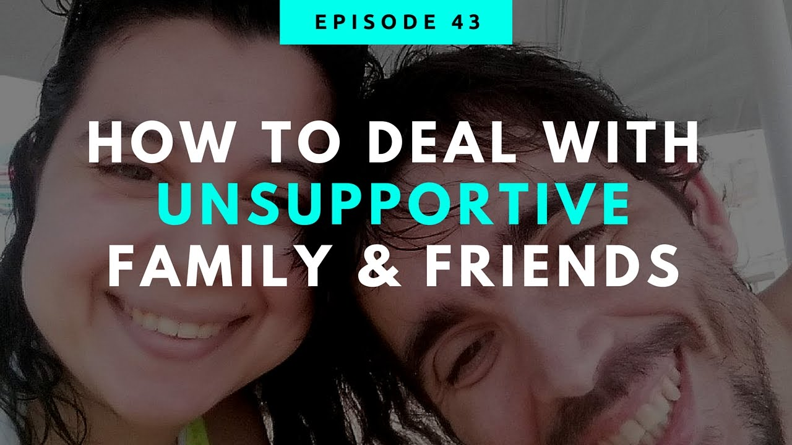
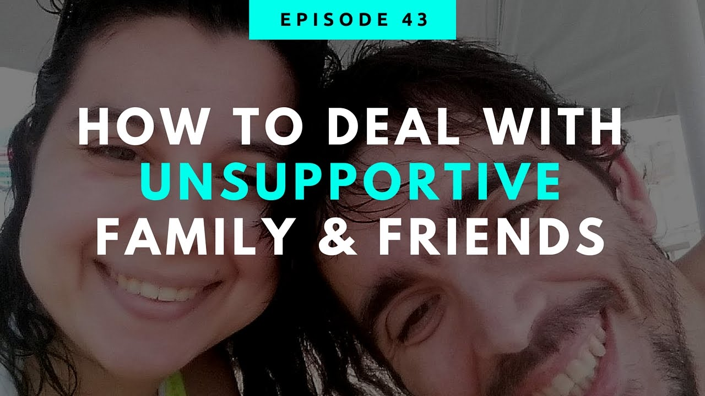

- Home
- Contact Us
HOW TO DEAL WITH UNSUPPORTIVE PEOPLE
 

When I first started to travel long-term, people asked me what I was running away from, wondered why I wanted to be gone so long, and would mostly tell me I was crazy or weird.
Suffice it to say, I didn’t get a lot of encouragement and support in the beginning.
Sometimes your friends and family, the people you want most to be supportive of your trip, aren’t as enthusiastic as you’d like them to be. They don’t understand and try to talk you out of going. It can be deflating and saddening. You’re so excited about this adventure and here they are, raining on your parade.
Many readers reach out to me about this topic frequently. I can feel the angst in their emails and the confusion at not knowing to how deal with the situation.
“How do I not let them get me down? What did you do? What do I say?”
As I sat down to write this article, I took a poll on Facebook and asked readers about their experiences. I was amazed by how much commonality there was among people’s situations and the reactions from their friends and family. Apparently, I’m not the only who faced such negativity, and, luckily, I’m also not the only who ignored it.
But it still sucks when your support system is so unsupportive. So below are some common criticisms future travelers hear and examples of how I’ve turned similar criticism around when I’ve been faced with it myself:
“The world is unsafe. You shouldn’t go.”I hear this one a lot, not only from people via email but also from people in my own life (especially my mom). News organizations paint the world to be a scary, scary place with criminals lurking around every corner. News shows love to highlight the dangers of life; as they say, “if it bleeds, it leads.” But crime happens everywhere. It occurs in NYC, London, Paris, Tokyo, Thailand, Turkey, Brazil, and every small town and medium-sized city in between. You can walk out of your house and be mugged or hit by a bus. Just like you can travel the world and never have anything happen to you. There is no place in the world that is 100% safe. Once you put it into this perspective for people, it usually ends the subject.
“You are just running away.”People seem to assume that if you are traveling long-term, you must be running away from something. When people say this to me, I tell them that yes, I am running away — from their version of life and to my version of life. Remind people that what they do in their life may make them happy, but that you have different goals — and this trip is what makes you happy right now. Most people will admit you have a point and drop the subject because, at the end of the day, we all want our friends to realize their dreams and be happy. True friends will let you go after yours and be supportive along the way.
“Why don’t you get a job?”Let’s face facts: unless you suddenly strike it rich, you’ll be working until you’re dead. The notion of working until a certain age and then retiring is long gone in the modern economy. When people tell me that I should get a job, I respond that if I’m going to be working well into my old age, I’d rather spend my healthy years exploring the world instead of sitting in an office. There will always be time later to work.
“I wish I could do that. It must be nice to not have any responsibility.”This is jealousy, pure and simple. I tell people, “You can travel too.” There’s nothing special about me and my decision. Once you take care of your bills and sell your stuff, you can set off on your own journey — even if you’re older than the average backpacker or have kids. While there are always circumstances that really keep people from traveling, for the most part the only things holding anyone back are the restrictions they put on themselves. People of all ages and circumstances find ways to turn travel into a reality.
“It’s unsafe to travel alone.” I typically respond to anyone who offers this argument by asking them why they believe this, and they will usually begin to spout stories they “learned” from the news about people who traveled alone and ended up in a bad situation. They might rattle off worst-case scenarios: “you could get sick, injured, robbed, or worse, and no one would be around to help.” That may be true, but if I went hiking in the woods by myself, the same thing could happen. Hell, I could fall in my apartment and no one might notice for days. As a solo traveler, you have to be a little more vigilant, but being alone in Paris or Thailand is like being alone everywhere else.